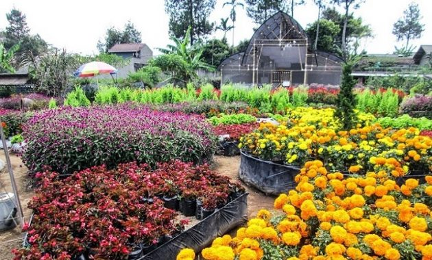
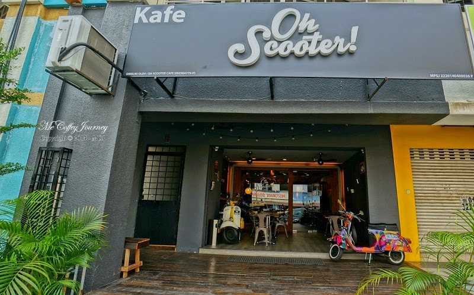
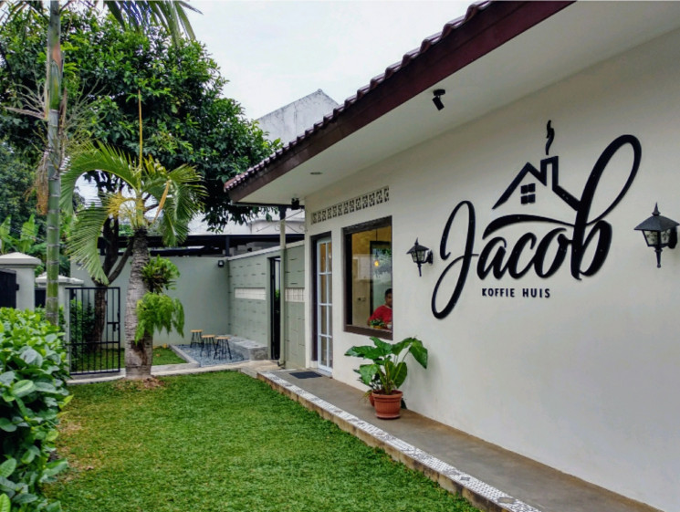
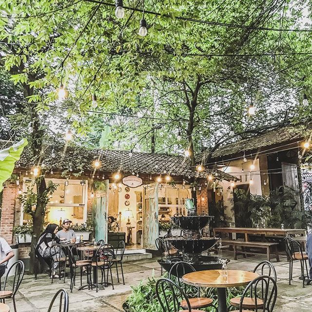

masjid yang terletak disawangan depok yang berkubah mas

taman wiladatika adalah taman yangan ada di depok

adalah wisata yang terdapat banyak pepohonan

cave scooter adalah cave yang bertemakan scooter

cave jacob adalah cave yang terletak didepok

pops cave adalah cave yang terdapat barang antik di dalamnya